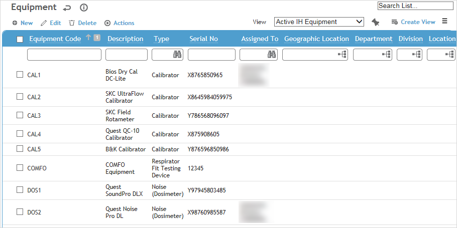
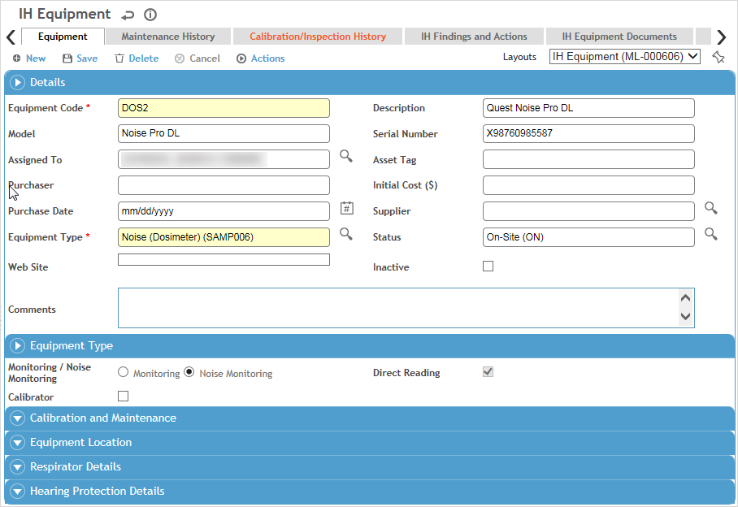

In the appropriate Cloud’s menu, click Equipment (“Asset Management” in the Environmental menu) and use the provided fields and views to filter the list.

If you just need to change any of the fields that display on the list view for one or more records, select the checkbox beside the record(s) and click Edit to do an inline edit of these fields without opening each record (be sure to click Save when you’re finished).
Click a link to edit a record, or click New.

To record multiple similar pieces of equipment, record and save one, then choose Actions»Copy. A new equipment record is created with most of the same information; open the link to change or add other information.
On the Equipment tab, enter information about the device.
Most of the fields are self-explanatory, but keep in mind the following:
Medical equipment: select the type of Medical Device. If you chose Audiometric, select the Audiometer Interface to be used when transferring results. If you chose Spirometry, select the Spirometer Interface to be used when transferring results.
All equipment types except Medical: if a corporate asset tag is attached to the device, record the ID.
Optionally, include a Website for reference, e.g. for sales or support information.
Enter information about the equipment’s Calibration and Maintenance requirements and dates. The Next Calibration/Inspection Date will be calculated based on the Calibration/Inspection Period selected. When the Last Calibration/Inspection and Last Maintenance Dates are updated, records are added to the Maintenance History and Calibration/Inspection History tabs.
The layout may change if a custom layout is associated with the selected Equipment Type; this equipment record will always open with the associated layout in the future. This custom layout may also include sections to capture additional attributes or user-defined fields which may be tracked by version date. Please contact your system administrator for further information.
If the Cority Email Notification Utility is running and an email address is defined for the employee in the Assigned To field, an email message will be sent to notify when the equipment is due for calibration.
The Findings and Actions tab displays all findings and actions recommended (or required) for this equipment.
For information about recording a finding and its actions, see Recording a New Finding.
To view an action’s attachment, open the finding and choose Actions»Open Document.
Use the Documents tab to link files containing information about the equipment (e.g. manuals, lease agreements, etc.) to the equipment record. Linking a file to a record provides easy access to these files. For more information, see Linking or Importing a Document.
The Questionnaires tab allows you to associate questionnaires with a record. For information about creating and administering questionnaires, see Questionnaires.
Safety or Environmental equipment only: The Related Inspections tab displays any inspections associated with this equipment. Click a link to view the inspection record details. This list can be exported to Excel.
The Related Metrics tab displays any custom metrics that have been assigned to this equipment. Click a link to view the custom metric record. This list can be exported to Excel.
Click Save.